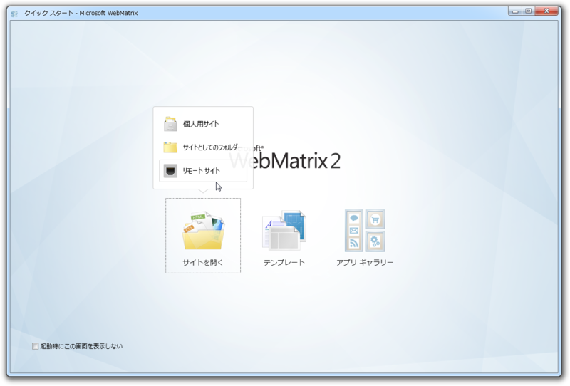

Windows Azure Web Sites と WebMatrix 2 の組み合わせはマーベラス！
公開日：
今日は、 Windows Azure Web Sites でサクッと WordPress をセットアップしてみた - だるろぐ をローカルにダウンロード・管理する。やっと「WebMatrix 2」の登場だ！ またインストールしていない人はしておくように。
窓の杜 - 【NEWS】「WebMatrix 2」がリリース候補版に、“Node.js”サポートや“Azure”連携を追加
リモートサイトへの接続

まず起動。［リモートサイト］を選択する。

……とその前に、 Azure の管理ポータルで公開プロファイルをダウンロードしておく。なぜかというと……

次で使うからだ。公開プロファイルを読み込めば、それだけで設定完了！ これすんごい楽チンじゃなイカ！
ちょっとトラブル……

しかし、うちの環境ではここで「WebMatrix 2」がフリーズ。
原因は「Git for WebMatrix」だった。未導入の場合は問題なく作業を進められるんじゃいかな。うちの場合も、再起動すればそのまま作業を進めることができた。
窓の杜 - 【REVIEW】バージョン管理システム「Git」を「WebMatrix 2」へ統合「Git for WebMatrix」
話は変わるけど、拡張機能がクラッシュしたら次回起動時に無効化してくれるのは親切な設計だと思う。当たり前のことかもしれないけれど、当たり前にやってくれるアプリは少ない。まだリリース候補版だけど、なかなか完成度は高い。
Webサイトのダウンロード

気を取り直して作業再開。リモート接続が完了したら、［ダウンロード］ボタンを押してWebサイトをローカルへダウンロード。「Web配置」を利用しているので、データベースの内容もダウンロードできるのがうれしい。本番（リモート）環境とローカル環境のデータが同期できるため、より近い状態でテストできる。リモートへのデータ反映も［発行］（アップロード）で行える。


ダウンロードの際は、必要なパッケージのインストール（依存性解決）も勝手にやってくれる。多少時間がかかる場合があるけれども、ちょっと我慢しよう。今回はそんなに時間がかからなかった。